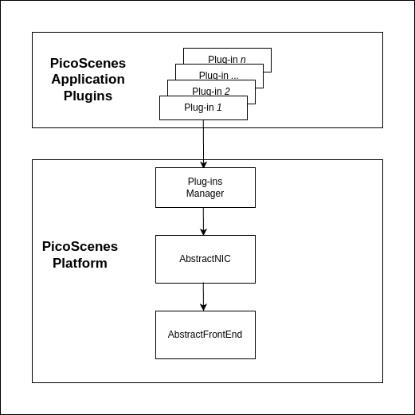

Author: Tian Teng, Xidian University, tengtianmoemoe@gmail.com
Before creating your own PicoScenes plugins from scratch, you have seven steps to gradually develop your understanding of the PicoScenes architecture and the coding skillset. During this process, you will learn how to git clone PS-PDK code, compile it, modify it, debug it, and imitate it. You will also have a general understanding of modern C++ development on the Linux platform.
Prerequisites
PicoScenes Plugin Development Kit (PS-PDK), as a standard C++ library, includes the PicoScenes C/C++ headers and libraries. If you have installed PicoScenes software, PS-PDK is already in your system. The headers and the binary library files are installed at /usr/local/PicoScenes/include/PicoScenes and /usr/local/PicoScenes/lib, respectively. You may refer to the document installation to ensure your installation.
Install necessary development dependencies
Run the following command to install the dependencies for PS-PDK development.
sudo apt install -y git cmake build-essential libboost-all-dev libssl-dev libcpprest-dev libsodium-dev libfmt-dev libuhd-dev libopenblas-dev libfftw3-dev pkg-config
Clone, build and install PicoScenes PDK project
Run the following command to git clone the PicoScenes-PDK project
git clone https://github.com/wifisensing/PicoScenes-PDK --recursive
If PicoScenes and all the development dependencies are successfully installed, you can run the following command to build and install the three plugins of PicoScenes-PDK project.
cd PicoScenes-PDK # or cd to the cloned directory
./Fast_Build_Install_Plugin.sh
Fast_Build_Install_Plugin.sh is a bash script with the following content, which rebuilds the plugins and the .deb package and install the .deb package.
#!/bin/bash
scriptDir="$(cd "$(dirname "${BASH_SOURCE[0]}" )" && pwd )"
sudo apt purge picoscenes-plugins-demo-echoprobe-forwarder -y
cd $scriptDir && rm -rf $scriptDir/build && mkdir $scriptDir/build && cd $scriptDir/build
cmake .. && make package -j`nproc`
cd $scriptDir/build && sudo dpkg -i ./picoscenes*.deb
If everything goes fine, the above command rebuilds and reinstalls the latest PS-PDK repository.
Optional Feature Prerequisites
We recommand JetBrains CLion as the IDE for PicoScenes plugin development.
Developing PicoScenes Plugins
PicoScenes Plugin Overview
The following image illustrates the relationship between PicoScenes-plugin and PicoScenes.

The top box is labeled “PicoScenes Application Plugins,” which contains multiple sub-boxes marked as “Plugin-1,” “Plugin-2,” through “Plugin-n,” indicating that there are multiple plugins available for use by the PicoScenes platform. These plugins are managed through an intermediary box, “Plugins Manager,” signifying that all plugins are uniformly managed by this plugin manager.
The process begins with the initiation of the platform, followed by the automatic detection of all available plugins. After detection, each plugin is systematically installed. Once the installation is complete, the system parses user commands and proceeds to poll each plugin to verify if they meet the requirements of the commands. Upon confirmation, the system executes the corresponding plugins.

The plugin has the capability to control all hardware on the platform, with all functions and APIs within its realm of control. It is capable of receiving and transmitting data flows, including WiFi packets. Once the hardware platform captures a packet, it forwards this data to all plugins, ensuring that each one receives the packet.
“Imitation is not just the sincerest form of flattery - it’s the sincerest form of learning.” – George Bernard Shaw
Hint: You can learn how to write plugins step by step following the tutorial, or you can view the complete code in the repository.
PicoScenes Plugin folder structure
The entire PS-PDK project is managed by CMake and contains three working plugins, a Demo plugin, the EchoProbe, and UDP-forwarder.
PicoScenes-PDK/CMakeLists.txt
# ...
add_subdirectory(plugin-demo)
add_subdirectory(plugin-echoprobe)
add_subdirectory(plugin-forwarder)
# ...
add_subdirectory(plugin-demo): searches CMakeLists.txt inplugin-demo
PicoScenes-PDK/plugin-demo/CMakeLists.txt
# PicoScenes-PDK/plugin-demo/CMakeLists.txt
# The PicoScenes Plugins MUST be named in "PDK-xxx" pattern.
ADD_LIBRARY(PDK-demo SHARED DemoPlugin.cxx)
TARGET_LINK_LIBRARIES(PDK-demo ${Boost_LIBRARIES} fmt::fmt SystemTools)
install(TARGETS PDK-demo DESTINATION .)
DemoPlugin Inherits from AbstractPicoScenesPlugin. Below are the properties and methods in DemoPlugin.
DemoPlugin.hxx
// DemoPlugin.hxx
#include <iostream>
#include <mutex>
#include <PicoScenes/AbstractPicoScenesPlugin.hxx>
#include <PicoScenes/MAC80211CSIExtractableNIC.hxx>
class DemoPlugin : public AbstractPicoScenesPlugin {
public:
// Get the name of the plugin
std::string getPluginName() override;
// Get the description of the plugin
std::string getPluginDescription() override;
// Get the status of the plugin
std::string pluginStatus() override;
// Get the supported device types by the plugin
std::vector<PicoScenesDeviceType> getSupportedDeviceTypes() override;
// Perform initialization tasks for the plugin
void initialization() override;
// Get the options description for the plugin
std::shared_ptr<boost::program_options::options_description> pluginOptionsDescription() override;
// Parse and execute commands for the plugin
void parseAndExecuteCommands(const std::string &commandString) override;
// Create an instance of the DemoPlugin
static std::shared_ptr<DemoPlugin> create()
{
return std::make_shared<DemoPlugin>();
}
private:
// Options description for the plugin
std::shared_ptr<po::options_description> options;
};
// Alias the create function to 'initPicoScenesPlugin' using BOOST_DLL_ALIAS
BOOST_DLL_ALIAS(DemoPlugin::create, initPicoScenesPlugin)
These methods are implemented in Demoplugin.cxx
DemoPlugin.cxx
// DemoPlugin.cxx
#include "DemoPlugin.hxx"
std::string DemoPlugin::getPluginName() {
return "PicoScenes Demo Plugin";
}
std::string DemoPlugin::getPluginDescription() {
return "Demonstrate the PicoScenes Plugin functionality";
}
std::string DemoPlugin::pluginStatus() {
return "this method returns the status of the plugin.";
}
std::vector<PicoScenesDeviceType> DemoPlugin::getSupportedDeviceTypes() {
static auto supportedDevices = std::vector<PicoScenesDeviceType>{PicoScenesDeviceType::IWL5300, PicoScenesDeviceType::QCA9300, PicoScenesDeviceType::IWLMVM_AX200, PicoScenesDeviceType::IWLMVM_AX210, PicoScenesDeviceType::VirtualSDR, PicoScenesDeviceType::USRP, PicoScenesDeviceType::SoapySDR};
return supportedDevices;
}
void DemoPlugin::initialization() {
// Create an options description for the DemoPlugin with a specific name and line length
options = std::make_shared<po::options_description>("Demo Options", 120);
}
std::shared_ptr<boost::program_options::options_description> DemoPlugin::pluginOptionsDescription() {
return options;
}
void DemoPlugin::parseAndExecuteCommands(const std::string &commandString) {
}
How to parse commands
Add the following content in DemoPlugin.cxx
DemoPlugin.cxx
// DemoPlugin.cxx
...
...
void DemoPlugin::initialization() {
// Create an options description for the DemoPlugin with a specific name and line length
options = std::make_shared<po::options_description>("Demo Options", 120);
// Add a command-line option for the DemoPlugin
options->add_options()
("demo", po::value<std::string>(), "--demo <param>");
}
...
void DemoPlugin::parseAndExecuteCommands(const std::string &commandString) {
// Create a variables map to store parsed options
po::variables_map vm;
// Parse the command string using Boost.ProgramOptions
auto parsedOptions = po::command_line_parser(po::split_unix(commandString))
.options(*pluginOptionsDescription())
.allow_unregistered()
.style(po::command_line_style::unix_style & ~po::command_line_style::allow_guessing)
.run();
// Store the parsed options in the variables map
po::store(parsedOptions, vm);
// Notify the variables map about the parsed options
po::notify(vm);
if (vm.count("demo")) {
auto optionValue = vm["demo"].as<std::string>();
LoggingService_Plugin_info_print("Plugin has been installed, its param is {}", std::string(optionValue));
}
}
Compile and run plugin
Compile the plugin using ./Fast_Build_Install_Plugin.sh
./Fast_Build_Install_Plugin.sh
Open terminal, run Picoscenes platform
PicoScenes "-d debug
--plugin-dir <your-plugin-dir>/PicoScenes-PDK;
-i virtualsdr
--demo HelloPicoScenes"
If successfully executed, you will see the following content in the console.
[17:31:51.183948] [Plugin ] [Info ] Plugin has been installed, its param is HelloPicoScenes
The command options, *“-d debug –plugin-dir
-d debug: Modifies the display level of the logging service to debug--plugin: Search plugin’s directory/PicoScenes-PDK is your plugin's location -i virtualsdr: Switches the device to virtualsdr--demo HelloPicoScenes: enable demo command, “HelloPicoScenes” is the parameter
PicoScenes uses polymorphism to manage plugins. Developers should inherit from AbstractPicoScenesPlugin to develop their plugins. The following diagram shows the inheritance.

The initialization() method defines plugin’s commands. parseAndExecuteCommands() method parses commands and arguments.
void DemoPlugin::initialization() {
// Create an options description for the DemoPlugin with a specific name and line length
options = std::make_shared<po::options_description>("Demo Options", 120);
// Add a command-line option for the DemoPlugin
options->add_options()
("demo", po::value<std::string>(), "--demo <param>");
}
options->add_options(): Define command “demo” and set parameter’s type
void DemoPlugin::parseAndExecuteCommands(const std::string &commandString) {
...
if (vm.count("demo")) {
auto optionValue = vm["demo"].as<std::string>();
LoggingService_Plugin_info_print("Plugin has been installed, its param is {}",std::string(optionValue));
}
}
vm["demo"].as<std::string>(): Get parameters “HelloPicoScenes”
How to receive packages
You have now learned how to define a command and parse it. In the upcoming example, you will learn how to make a receive/send plugin.
Before writing a plugin for receiving signals, understand the process of writing a receive plugin.

parseAndExecuteCommands(): Parse plugin command and parametersnic->startRxService(): Start receiving signals from different devicesrxHandle(): Handle receiving signals
Add plugin commands and activate the receive mode
DemoPlugin.cxx
void DemoPlugin::parseAndExecuteCommands(const std::string &commandString) {
// Create a variables map to store parsed options
po::variables_map vm;
// Define the command line options style
auto style = pos::allow_long | pos::allow_dash_for_short |
pos::long_allow_adjacent | pos::long_allow_next |
pos::short_allow_adjacent | pos::short_allow_next;
// Parse the command string using Boost.ProgramOptions and store options in the variables map
po::store(po::command_line_parser(po::split_unix(commandString)).options(*options).style(style).allow_unregistered().run(), vm);
// Notify the variables map about the parsed options
po::notify(vm);
// Check if the "demo" option is present
if (vm.count("demo")) {
// Get the value of the "demo" option
auto modeString = vm["demo"].as<std::string>();
// Check if the modeString contains "logger" and start the Rx service accordingly
if (modeString.find("logger") != std::string::npos) {
nic->startRxService();
}
}
}
DemoPlugin.hxx
class DemoPlugin : public AbstractPicoScenesPlugin {
public:
...
...
// Handle received frames in the plugin
void rxHandle(const ModularPicoScenesRxFrame &rxframe) override;
private:
std::shared_ptr<po::options_description> options;
};
Implement rxHandle() in DemoPlugin.cxx
void DemoPlugin::rxHandle(const ModularPicoScenesRxFrame &rxframe) {
LoggingService_debug_print("This is my rxframe: {}",rxframe.toString());
}
Build the plugin and run in terminal
./Fast_Build_Install_Plugin.sh
PicoScenes "-d debug
--bp
--plugin-dir <your-plugin-dir>/PicoScenes-PDK;
-i virtualsdr
--rx-from-file sample5
--demo logger"
--rx-from-file: Read signals from file sample.bbsignal
If successfully running, the terminal will show
[17:34:09.811501] [Platform] [Debug] This is my rxframe: RxFrame:{RxSBasic:[device=USRP(SDR), center=2412, control=2412, CBW=20, format=HT, Pkt_CBW=20, MCS=0, numSTS=1, GI=0.8us, UsrIdx/NUsr=(0/1), timestamp=1288, system_ns=1704015249809485863, NF=-78, RSS=-7], RxExtraInfo:[len=24, ver=0x2, sf=20.000000 MHz, cfo=0.000000 kHz, sfo=0 Hz], SDRExtra:[scrambler=39, packetStartInternal=25761, rxIndex=25760, rxTime=0.001288, decodingDelay=0.0620708466, lastTxTime=0, sigEVM=2.4], (HT)CSI:[device=USRP(SDR), format=HT, CBW=20, cf=2412.000000 MHz, sf=20.000000 MHz, subcarrierBW=312.500000 kHz, dim(nTones,nSTS,nESS,nRx,nCSI)=(56,1,0,1,1), raw=0B], LegacyCSI:[device=USRP(SDR), format=NonHT, CBW=20, cf=2412.000000 MHz, sf=20.000000 MHz, subcarrierBW=312.500000 kHz, dim(nTones,nSTS,nESS,nRx,nCSI)=(52,1,0,1,2), raw=0B], BasebandSignal:[(float) 3045x1], MACHeader:[type=[MF]Reserved_14, dest=00:16:ea:12:34:56, src=00:16:ea:12:34:56, seq=8, frag=0, mfrags=0], PSFHeader:[ver=0x20201110, device=QCA9300, numSegs=1, type=10, taskId=55742, txId=0], TxExtraInfo:[len=8, ver=0x2], MPDU:[num=1, total=75B]}
How to transmit packages
The process of frame transmitting is similar to frame receiving.

nic->startTxService(): Start transmitting signals processbuildBasicFrame: Initialize and build Packet framenic->transmitPicoScenesFrameSync(*txframe);: deliver frame to phy layer
Add method buildBasicFrame() in DemoPlugin.hxx
class DemoPlugin : public AbstractPicoScenesPlugin {
public:
...
// Handle received frames in the plugin
void rxHandle(const ModularPicoScenesRxFrame &rxframe) override;
// Build a basic transmission frame for the plugin
[[nodiscard]] std::shared_ptr<ModularPicoScenesTxFrame> buildBasicFrame(uint16_t taskId = 0) const ;
private:
std::shared_ptr<po::options_description> options;
};
Implement buildBasicFrame() in DemoPlugin.cxx
std::shared_ptr<ModularPicoScenesTxFrame> DemoPlugin::buildBasicFrame(uint16_t taskId) const
{
auto frame = nic->initializeTxFrame();
/**
* The platform parser will parse the Tx parameters options and store the results in AbstractNIC.
*/
frame->setTxParameters(nic->getUserSpecifiedTxParameters());
frame->setTaskId(taskId);
auto sourceAddr = MagicIntel123456;
frame->setSourceAddress(sourceAddr.data());
frame->set3rdAddress(nic->getFrontEnd()->getMacAddressPhy().data());
return frame;
}
Add transmit command injector in parseAndExecuteCommands()
void DemoPlugin::parseAndExecuteCommands(const std::string &commandString) {
// Create a variables map to store parsed options
po::variables_map vm;
// Define the command line options style
auto style = pos::allow_long | pos::allow_dash_for_short |
pos::long_allow_adjacent | pos::long_allow_next |
pos::short_allow_adjacent | pos::short_allow_next;
// Parse the command string using Boost.ProgramOptions and store options in the variables map
po::store(po::command_line_parser(po::split_unix(commandString)).options(*options).style(style).allow_unregistered().run(), vm);
// Notify the variables map about the parsed options
po::notify(vm);
// Check if the "demo" option is present
if (vm.count("demo")) {
// Get the value of the "demo" option
auto modeString = vm["demo"].as<std::string>();
// Check if the modeString contains "logger" and start the Rx service accordingly
if (modeString.find("logger") != std::string::npos) {
nic->startRxService();
}
// Check if the modeString contains "injector" and start the Tx service with basic frame transmission
else if (modeString.find("injector") != std::string::npos) {
nic->startTxService();
// Generate a random task ID within a specified range
auto taskId = SystemTools::Math::uniformRandomNumberWithinRange<uint16_t>(9999, UINT16_MAX);
// Build a basic transmission frame with the generated task ID
auto txframe = buildBasicFrame(taskId);
// Transmit the PicoScenes frame synchronously
nic->transmitPicoScenesFrameSync(*txframe);
}
}
}
Build the plugin and run in terminal
./Fast_Build_Install_Plugin.sh
PicoScenes "-d debug
--bp --plugin-dir <your-plugin-dir>/PicoScenes-PDK;
-i virtualsdr
--demo injector"
[18:15:35.993309] [SDR ] [Debug] virtualsdr(Virtual(SDR))-->TxFrame:{MACHeader:[type=[MF]Reserved_14, dest=00:16:ea:12:34:56, src=00:16:ea:12:34:56, seq=0, frag=0, mfrags=0], PSFHeader:[ver=0x20201110, device=QCA9300, numSegs=0, type=0, taskId=33196, txId=0], tx_param[preset=DEFAULT, type=HT, CBW=20, MCS=0, numSTS=1, Coding=BCC, GI=0.8us, numESS= , sounding(11n)=1]} | PPDU: 2480
Debug PicoScenes plugins
Since the plugin .so file cannot run by itself, a tricky problem of plugin development emerges, how to debug a plugin?
Xincheng Ren, one of our contributors, records a .gif video describing the plugin debug process. In this video, we use JetBrains CLion as our IDE. To debug the EchoProbe plugin, rather than specifying the .so plugin file as the debug main program, you must specify the PicoScenes main program at /usr/local/PicoScenes/bin/ to be the debug main program. Second, you should also add --plugin-dir /path-to-plugin program option to tell PicoScenes main program to load your plugins.

You can download this .gif video from Debug Plugin.
{kind=link}